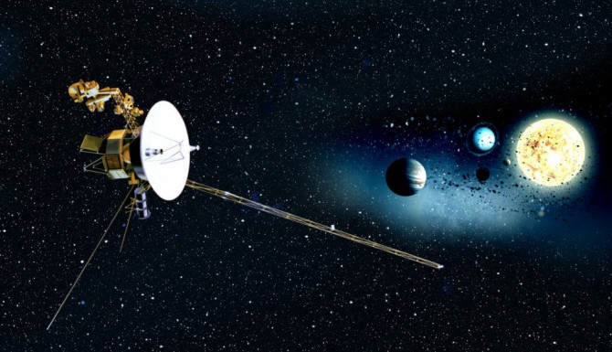
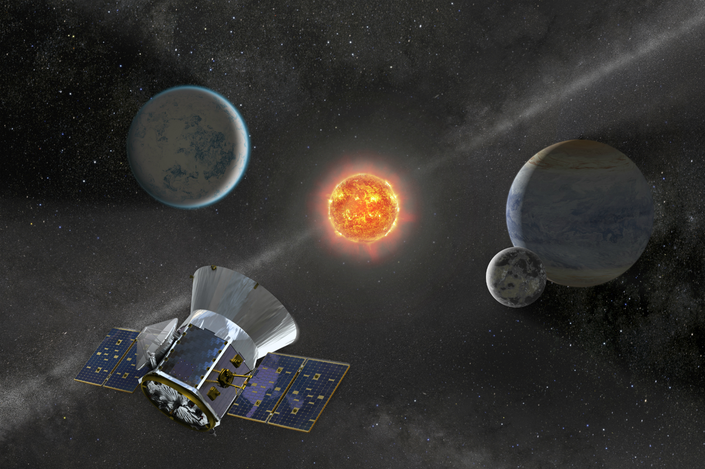

Budget
{kind=link}
NASA's share of the total federal budget peaked at approximately 4.41% in 1966 during the Apollo program, then rapidly declined to approximately 1% in 1975, and stayed around that level through 1998. The percentage then gradually dropped, until leveling off again at around half a percent in 2006 (estimated in 2012 at 0.48% of the federal budget). In a March 2012 hearing of the United States Senate Science Committee, science communicator Neil deGrasse Tyson testified that "Right now, NASA's annual budget is half a penny on your tax dollar. For twice that—a penny on a dollar—we can transform the country from a sullen, dispirited nation, weary of economic struggle, to one where it has reclaimed its 20th century birthright to dream of tomorrow."
Despite this, public perception of NASA's budget differs significantly: a 1997 poll indicated that most Americans believed that 20% of the federal budget went to NASA.
{kind=link}
For Fiscal Year 2015, NASA received an appropriation of US$18.01 billion from Congress—$549 million more than requested and approximately $350 million more than the 2014 NASA budget passed by Congress.
In Fiscal Year 2016, NASA received $19.3 billion.
President Donald Trump signed the NASA Transition Authorization Act of 2017 in March, which set the 2017 budget at around $19.5 billion.[134] The budget is also reported as $19.3 billion for 2017, with $20.7 billion proposed for FY2018.
Examples of some proposed FY2018 budgets:
- Exploration: $4.79 billion
- Planetary science: $2.23 billion
- Earth science: $1.92 billion
- Aeronautics: $0.685 billion